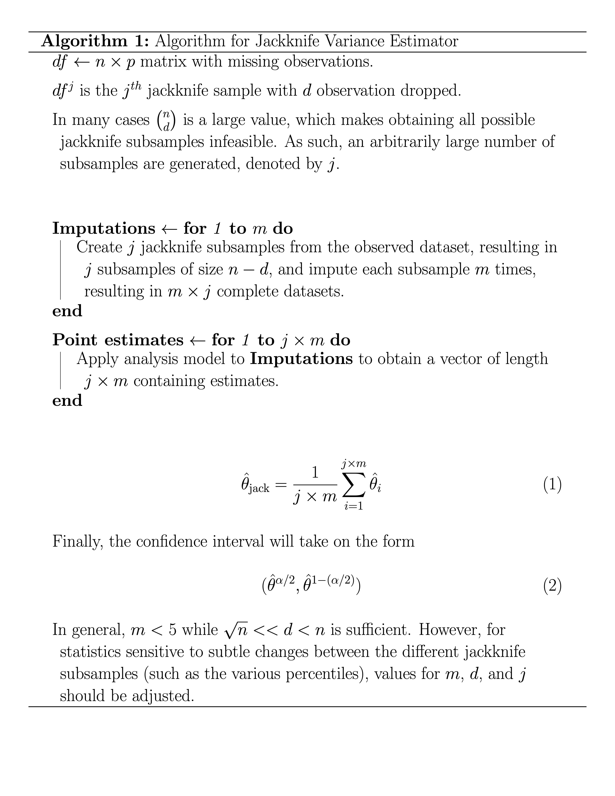

3 The Proposed Jackknife Estimator
A pseudocode overview of the jackknife estimator proposed may be seen in the following figure.

As part of the algorithm, researchers must choose values \(k\) and \(j\), which will be context-dependent quantities. Ideally, a \(k\) value which satisfies \(\frac{\sqrt{n}}{k} \rightarrow 0\) will provide asymptotically unbiased estimates even for non-smooth statistics. Rewriting the foregoing condition for \(k\):
\[ \begin{align} &\frac{\sqrt{n}}{k} \rightarrow \ 0 \\ &\implies k >> \sqrt{n} \\ &\text{Since} \ k \leq n \\ &\implies n \geq k >> \sqrt{n} \end{align} \]
It is evident that \(k\) should take on some value between \(n\) and \(\sqrt{n}\) with \(k\) being closer to \(n\), particulary for non-smooth statistics. At any rate, \(j = \binom{n}{k}\) will likely be a value that is not computationally feasible to obtain. Again, the number of subsamples required, \(j\), can be limited to yield the estimator more accessible. The choice of \(j\) will be a multifaceted decision, where higher values are ideal. Ideally, a small pilot value may be performed with a range of \(j\) values to determine values of \(j\) for which estimates begin to converge.